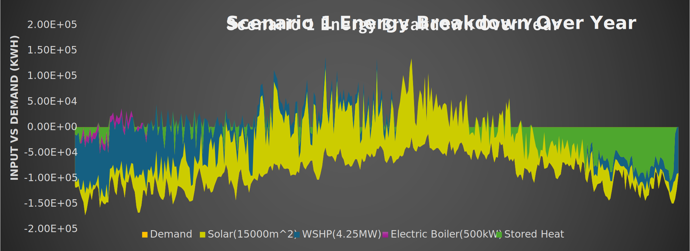
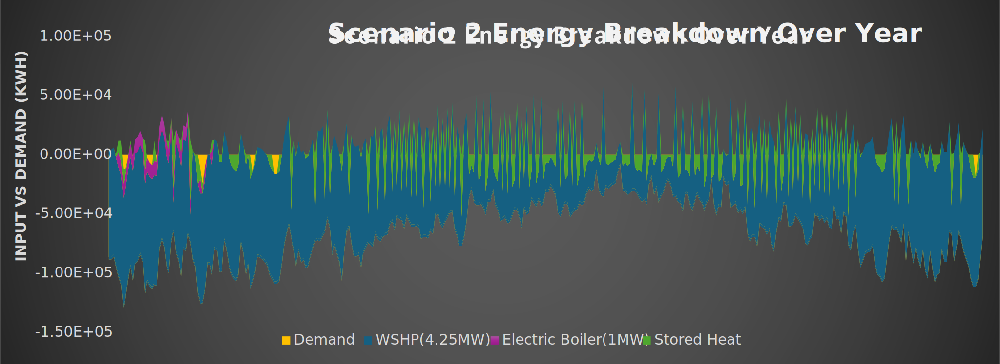

Results
looking at the demand of our model, you can see here is, the daily demand of Wallacetown and when you add the solar, you can see just with the solar, it does meet demand, through quite a lot of the days, but is insufficient, through a substantial portion of the year. So, adding in the somewhat dispatchable water source heat pumps, really helps to levelize that and meet the demand on most days.
Scenario 1 considers the connection of all viable sources within the scope area with an effective solar panel area of 15000m^2 in the 33000m^2 prospective site, under which the GSHP STES lies. This is coupled with 4.25MW(thermal) from River Source Heat Pumps and a backup 500kW direct electric boiler for low flow events and extreme winters.
Scenario 2 considers the removal of the solar thermal area and GSHP STES which simplifies the design and would be thermodynamically feasible if planned fabric improvements of buildings in the area go ahead. In this case the ambient loop would act as a thermal store if necessary, which decreases the efficiency of decentralised heat pumps if done excessively.
The Thermal storage is so important because it balances supply and demand. Our demand profile for Wallacetown opposite shows we have got the solar and the water source heat pump which seems oversized at first, but really, it is inversely correlated to the demand expected at any time. When solar supply is high then demand is low. The water source heat pump provides low grade heat. So, a lot of the possible energy it could produce will not be produced because it will cost more energy to store it into a borehole than it would to produce it in the first place.

As seen opposite there is the energy supply per year, around a third of the solar thermal supply is recycled through the thermal storage and our capacity and our storage is full for most of the year and never goes below zero. Green Area is when heat is taken from the storage.
We validated our models through a variety of methods. We created our model in Excel and validated it with nPro, which is an online model simulation tool based in Germany. We got results of less than 3 percent deviance in energy share meaning that our ratios between our technologies were accurate. The different energy demands also matched within 10%. An important note about the capital costs is that they're also taken from nPro, and so those are based on, European and German standards. But looking at other case studies, this was still within 10 percent of the expected values.

So going on to the capital costs we considered two scenarios. One is pre fabric improvement of the buildings in Wallacetown and this would involve the Holstein Bank. You can see here that would be a total cost of around 70 million for an initial investment. The biggest portion of that is through the decentralized heat pumps. The maintenance of the system is considered quite low in our analysis with 1 percent for technologies and 2 percent for heat pumps.
Our scenario two is a lower uncertainty option due to not requiring deep groundwork. This assumes post fabric insulation, so there's less demand, meaning that demand can be met solely with the water source heat pump.

You can see here that there's significant reductions and equivalent electrical demand using heat pumps or district heating. Most of the electrical energy going into the system is from the decentralized heat pumps.

looking at the consumer costs, you can see that over time the more property connections that are to a district heating system, if it is sized appropriately, the levelized cost of heat, does decrease. This means that with all these features implemented, you can get savings of over 600 pounds a year for the average household in Wallacetown.

Our environmental analysis is very significant. Fabric improvement does save more money just on its own but doesn't reduce emissions nearly as much. And there is the inelastic demand from direct emissions via the gas which cannot be reduced further. Whereas the emissions associated with electricity are reducing over time and could eventually meet net zero specifications.